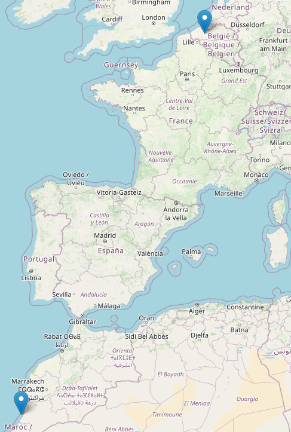

Analyzing Bird Migration Patterns with GPS Data
Contents
Analyzing Bird Migration Patterns with GPS Data#
Bird migration is a remarkable natural phenomenon that has long captivated the attention of researchers and enthusiasts alike. Birds migrate for various reasons, including better feeding opportunities, escaping harsh weather conditions, and finding suitable breeding grounds. Some bird species undertake astonishingly long journeys during migration, covering thousands of miles across continents. The Arctic Tern holds the distinction of being one of the longest migrating species, traveling from its Arctic breeding grounds to the Antarctica and back each year.
For many bird species, migration is not just a seasonal activity but a way of lie. Their survival, breeding success and overall ecology are closely intertwined with their migratory behavior.
This case study capitalizes on the wealth of GPS data to delve into the captivating realm of bird migration. By manipulating, examining and visualizing the collected GPS data, the goal is to shed light on the intricate patterns that govern the migratory journey of birds.
Dataset#
The data for this case study comes from the LifeWatch INBO project. It uses a small data set that consists of migration data for three gulls named Eric, Nico and Sanne.
Task Description#
The goal is to analyze and visualize the flight patterns of different bird species during their migration journeys. Using GPS tracking data collected from individual birds, the project aims to uncover insights into their flight behaviors, altitudes, and speeds.
1. Data Exploration
Explore the dataset to understand it’s structure, variables and available information.
2. Data Preprocessing
Cleaning the data by handling missing values
Organizing data into meaningful categories for analysis
3. Flight Pattern Analysis
Calculating daily mean speed and altitude for each bird
4. Data Visualization
Map the flight routes of the birds using the Folium library to illustrate their migration
Generate plots to visualize daily mean speed and altitude
import os
import pandas as pd
import matplotlib.pyplot as plt
import numpy as np
relative_path = "./"
file_loc = os.path.join(relative_path, "bird_tracking.csv")
data_df = pd.read_csv(file_loc,index_col = False)
data_df = data_df.drop(['Unnamed: 0'],axis=1)
data_df.head()
| altitude | date_time | device_info_serial | direction | latitude | longitude | speed_2d | bird_name | |
|---|---|---|---|---|---|---|---|---|
| 0 | 71 | 2013-08-15 00:18:08+00 | 851 | -150.469753 | 49.419860 | 2.120733 | 0.150000 | Eric |
| 1 | 68 | 2013-08-15 00:48:07+00 | 851 | -136.151141 | 49.419880 | 2.120746 | 2.438360 | Eric |
| 2 | 68 | 2013-08-15 01:17:58+00 | 851 | 160.797477 | 49.420310 | 2.120885 | 0.596657 | Eric |
| 3 | 73 | 2013-08-15 01:47:51+00 | 851 | 32.769360 | 49.420359 | 2.120859 | 0.310161 | Eric |
| 4 | 69 | 2013-08-15 02:17:42+00 | 851 | 45.191230 | 49.420331 | 2.120887 | 0.193132 | Eric |
The dataset comprises a total of 61920 rows and 8 columns, encompassing variables such as direction, latitude and speed_2d among others.
data_df.shape
(61920, 8)
Visualizing Data#
In this task, the focus is on generating a standard two-dimensional plot that visualizes the flight trajectory of a single bird. The plot will depict the coordinates of latitude and longitude corresponding to the bird’s movement.
Latitude and Longitude are inherently spherical coordinates, the representation of which in a two-dimensional plot introduces distortions due to the Earth’s curved surface. This becomes particularly evident when visualizing flight paths that span a considerable spatial range.
ind_Eric = data_df["bird_name"] == "Eric"
long_Eric = data_df.longitude[ind_Eric]
lat_Eric = data_df.latitude[ind_Eric]
Examining the coordinates for the bird Eric, the indices associated with the bird are extracted from the dataset. These indices are stored in the variable named ind_Eric.
The longitudinal and latitudinal data corresponding to Eric’s flight trajectory are seperately stored in long_Eric and lat_Eric.
plt.figure(figsize = (10,7));
plt.plot(long_Eric,lat_Eric,'r--');
plt.xlabel('Longitude');
plt.ylabel('Latitude');
Subsequently, the upcoming task involves plotting the flight trajectories of all three birds in a consolidated plot.
Using the .unique method to extract the distinct bird names, the code iterates through these names to acquire their corresponding indices This process enables the retrieval of longitudinal and latitudinal data for all birds, which is then plotted together.
birdnames = pd.unique(data_df.bird_name)
birdnames
array(['Eric', 'Nico', 'Sanne'], dtype=object)
plt.figure(figsize = (10,7))
for bird_name in birdnames:
ind = data_df.bird_name == bird_name
long = data_df.longitude[ind]
lat = data_df.latitude[ind]
plt.plot(long,lat,'--',label=bird_name)
plt.xlabel("Longitude");
plt.ylabel("Latitude");
plt.legend(loc = "lower right");
The flight patterns of these three birds exhibit a notable degree of similarity.
However, it can be observed that Nico and Sanne tend to explore more southerly regions compared to Eric’s flight trajectory.
Examining Flight Speed#
The dataset includes estimations of two-dimensional speeds for the birds. These speeds indicate their flying velocities on a 2D plane, which serves as a local approximation of the curved surface of the Earth.
speed_Eric = data_df["speed_2d"][ind_Eric]
The speed_2d data, which represents the two dimensional speed, is stored for Eric in speed_Eric.
speed_Eric[:10]
0 0.150000
1 2.438360
2 0.596657
3 0.310161
4 0.193132
5 2.904772
6 3.080584
7 2.199659
8 2.640076
9 4.592211
Name: speed_2d, dtype: float64
The isnan function from NumPy can be employed to determine whether an array contains any non-zero numbers.
By combining it with the any method, you can inquire if any of the values in the array are NaN. If the answer is True, it signifies the presence of at least one NaN in the array.
np.isnan(speed_Eric).any()
True
Since the isnan function produces an array containing True and False values, this allows for summation, where True is treated as 1 and False as 0 during the computation.
np.sum(np.isnan(speed_Eric))
85
There are 85 entries in Eric’s speed that are not numeric.
To visualize the speed data for Eric, only the points with numeric observations are considered. This is achieved using the following steps:
Assigning the result of
isnanto Eric’s speed variableind_speedEric.Applying bitwise complement to
ind_speedEric. This operation changes each instance ofTruetoFalseand vice-versa.
ind_speedEric = np.isnan(speed_Eric)
np.array(~ind_speedEric)
array([ True, True, True, ..., True, True, True])
The variable ind_speedEric holds the output of the isnan function. In this context, True signifies that a specific value is nan while False indicates that it is not.
Consequently, the bitwise complement of ind_speedEric, denoted by ~ind_speedEric, consists of values where True signifies that a particular value is non nan, while False indicates that is is a nan value.
speed_median = np.median(np.array(speed_Eric[~ind_speedEric]))
# creating the figure
plt.figure(figsize=(10,7))
# plotting the numeric values for Eric's speed
plt.hist(speed_Eric[~ind_speedEric],bins=np.linspace(0,30,20),density=True);
plt.xlabel("2D speed (m/s)");
# plotting the median speed
plt.axvline(speed_median,color='red',linestyle='dashed', linewidth=1,label='Median');
plt.ylabel('Frequency');
plt.legend();
plt.title("Eric 2d Speed");
Using Datetime#
Timestamped events frequently arise in various contexts. The possibilitiy of performing arithmetical operations involving dates and timestamps allows for calculations of time intervals between distinct observations.
Python offers the datetime module which is useful in dealing with a wide range of date and time-related tasks.
data_df['date_time'][:10]
0 2013-08-15 00:18:08+00
1 2013-08-15 00:48:07+00
2 2013-08-15 01:17:58+00
3 2013-08-15 01:47:51+00
4 2013-08-15 02:17:42+00
5 2013-08-15 02:47:38+00
6 2013-08-15 03:02:33+00
7 2013-08-15 03:17:27+00
8 2013-08-15 03:32:35+00
9 2013-08-15 03:47:48+00
Name: date_time, dtype: object
The date attribute of the dataset is represented in the format of year, month, day.
All entries within the date_time column are stored as strings. In order to perform operations on these entries, they must be converted into datetime objects.
import datetime
The first code block uses the
datetimemodule to call the.today()method. This method returns adatetimeobject that represents the current date and time.In the second code block, the variable
time1is assigned the value of thedatetimeobject returned by the.today()method. The functiontype()is then used to determine the type oftime1object.In the third block of code, the variable
time2is assigned the value of another.today()method. Finally, the time difference betweentime2andtime1is calculated using subtraction. The result is atimedeltaobject that represents the diffence betweem twodatetimeobjects in terms of days, seconds and microseconds.
# block 1
datetime.datetime.today()
datetime.datetime(2023, 8, 24, 14, 33, 16, 831251)
# block 2
time1 = datetime.datetime.today()
print(type(time1))
<class 'datetime.datetime'>
# block 3
time2 = datetime.datetime.today()
## printing the 'timedelta' object
## as string, showing the time difference
## in terms of days, hours, minutes, and seconds
print(time2 - time1)
## evaluating the `timedelta` object
time2 - time1
0:00:31.670776
datetime.timedelta(seconds=31, microseconds=670776)
To calculate the time duration between any two observatopms om pir dataset, it is necessary to initially convert the timestamps from the str type to datetime objects.
# value of datetime attribute for
# the first entry in dataset
data_df['date_time'][0]
'2013-08-15 00:18:08+00'
The notation +00 corresponds to Coordinated Universal Time (UTC) which denotes a time zone offset in hours.
Within the provided dataset, all the offsets are set to 0, implying that they will not be taken into consideration in subsequent operations.
data_df['date_time'][0][:-3]
'2013-08-15 00:18:08'
The strptime function serves the purpose of converting a string into a datetime object.
It requires two arguments: the first being the input string to be converted, and the second a string that defines the formatting of the input string. This allows the function to correctly interpret the string’s components and create the appropriate datetime object.
date_str = data_df.date_time[0][:-3]
print("Here is date time string: {}".format(date_str))
datetime.datetime.strptime(date_str, "%Y-%m-%d %H:%M:%S")
Here is date time string: 2013-08-15 00:18:08
datetime.datetime(2013, 8, 15, 0, 18, 8)
The output is a datetime object with the following attributes:
Year: 2013
Month: 8 (August)
Date: 15
Hour: 0
Minute: 18
Second: 8
Using the following script helps in iterating through each individual row within the dataset and generate the corresponding datetime object from the date_time attribute.
timestamps = []
for i in range(len(data_df)):
str_date = data_df["date_time"].iloc[i][:-3]
timestamps.append(datetime.datetime.strptime(str_date, "%Y-%m-%d %H:%M:%S"))
# extracting the first ten elements
# from the list
timestamps[:10]
[datetime.datetime(2013, 8, 15, 0, 18, 8),
datetime.datetime(2013, 8, 15, 0, 48, 7),
datetime.datetime(2013, 8, 15, 1, 17, 58),
datetime.datetime(2013, 8, 15, 1, 47, 51),
datetime.datetime(2013, 8, 15, 2, 17, 42),
datetime.datetime(2013, 8, 15, 2, 47, 38),
datetime.datetime(2013, 8, 15, 3, 2, 33),
datetime.datetime(2013, 8, 15, 3, 17, 27),
datetime.datetime(2013, 8, 15, 3, 32, 35),
datetime.datetime(2013, 8, 15, 3, 47, 48)]
# difference between the timestamp of 12th observation
# and the timestamp of the first observation
timestamps[11] - timestamps[0]
datetime.timedelta(seconds=14432)
The following step is creating a pandas Series object and populating it with the elements from the timestamps list. This helps in incluing the Series as an additional column within the existing dataframe.
data_df["timestamps"] = pd.Series(timestamps, index = data_df.index)
data_df.head()
| altitude | date_time | device_info_serial | direction | latitude | longitude | speed_2d | bird_name | timestamps | |
|---|---|---|---|---|---|---|---|---|---|
| 0 | 71 | 2013-08-15 00:18:08+00 | 851 | -150.469753 | 49.419860 | 2.120733 | 0.150000 | Eric | 2013-08-15 00:18:08 |
| 1 | 68 | 2013-08-15 00:48:07+00 | 851 | -136.151141 | 49.419880 | 2.120746 | 2.438360 | Eric | 2013-08-15 00:48:07 |
| 2 | 68 | 2013-08-15 01:17:58+00 | 851 | 160.797477 | 49.420310 | 2.120885 | 0.596657 | Eric | 2013-08-15 01:17:58 |
| 3 | 73 | 2013-08-15 01:47:51+00 | 851 | 32.769360 | 49.420359 | 2.120859 | 0.310161 | Eric | 2013-08-15 01:47:51 |
| 4 | 69 | 2013-08-15 02:17:42+00 | 851 | 45.191230 | 49.420331 | 2.120887 | 0.193132 | Eric | 2013-08-15 02:17:42 |
It is possible to generate a list with the intention of tracking the elapsed time since the beginning of data collection. This involves extracting the timestamps specific to Erc and saving them in the times list.
Each element in the list is used to compute the time difference between a given timestamp and initial time, which corresponds to the first element in the times list. A list comprehension gets the work done.
# extracting timestamps data for Eric
times_Eric = data_df['timestamps'][data_df['bird_name'] == "Eric"]
# calculating the time difference between
# times_Eric[:] and times_Eric[0]
elapsed_time_Eric = [time - times_Eric[0] for time in times_Eric]
# printing the timedelta between
# final observation timestamp and initial timestamp
print(elapsed_time_Eric[-1])
258 days 23:33:21
plt.figure(figsize = (10,7))
plt.plot(np.array(elapsed_time_Eric) / datetime.timedelta(days=1),'r--')
plt.xlabel("Observations")
plt.ylabel("Elapsed time (days)");
Upon examining the plot, a relatively straight line is seen. If the time interval between any two successive observations were consistently identical for all observations, a perfectly straight line would be observed. However, the plot showcases a few noticeable jumps, indicating the presence of observations that exhibit larger time intervals compared to other obsevations in the dataset.
Calculating Daily Mean Speed#
The subsequent objective is to generate a plot in which the y-axis represents the mean daily speed, and the x-axis represents time measured in days.
Since the dataset contains timestamps that are unevenly spaced, the initial point on the left corresponds to our observation number 0. All time measurements are relative to this 0th observation.
Analyzing the initial few points will likely correspond to day 0. The aim is to accumulate the indices for all observations falling within day 0. Once the timestamps transistion to day 1, the mean velocity over the collected observations for that day will be calculated. This process continues as indices for each new day is gathered.
elapsed_days = np.array(elapsed_time_Eric) / datetime.timedelta(days=1)
elapsed_days
array([0.0, 0.02082175925925926, 0.04155092592592593, ...,
258.9399652777778, 258.9607175925926, 258.9814930555556],
dtype=object)
# variable to check if we have hit the next day
next_day = 1
# list to keep track of indices of data points
inds = []
# list storing the daily mean speed of Eric
daily_mean_speed = []
for (the_index,the_time) in enumerate(elapsed_days):
# collecting indices if we haven't
# reached the next day
if the_time < next_day:
inds.append(the_index)
# next day reached
else:
# extracting speed for a particular day
speed_data = data_df['speed_2d'][inds]
# computing the mean and appending it to
# the list daily_mean_speed
daily_mean_speed.append(np.mean(speed_data))
# next day is increased by 1
next_day += 1
# list of indices is emptied
inds = []
Converting
daily_mean_speedlist into a NumPy array namedspeed_arrayUsing
isnanfunction to create a Boolean arrayspeed_ind, whereTruerepresenst the positions inspeed_arraythat haveNaNvaluesUsing the boolean indexing with
~speed_ind, thespeed_arrayis filtered to exclude the positions withNaNvaluesMedian of the cleaned
speed_arrayis calculated usingnp.median()
speed_array = np.array(daily_mean_speed)
speed_ind = np.isnan(speed_array)
speed_array = speed_array[~speed_ind]
print("Median: {}".format(np.median(speed_array)))
Median: 2.071156405887064
plt.figure(figsize = (10,7))
plt.plot(daily_mean_speed)
plt.xlabel("Day")
plt.ylabel("Mean speed (m/s)")
plt.title("Eric Mean Daily Speed");
The plot shows that Eric’s average speed remains consistently at 3 m/s or lower for the majority of the time. There are noticeable spikes in average speed occurring around day 95 and day 230. During these specific time intervals, Eric’s average speed increases significantly, reaching upto 9 m/s. These spikes coincide with Eric’s migration periods, indicating his accelerated movement during these phases.
Cartopy Library#
Cartopy is a Python library designed to help cartographic tasks by offering a comprehensive set of tools for map creation and visualization. It simplifies the process of generating maps and working with geospatial data within Python.
import cartopy.crs as ccrs
import cartopy.feature as cfeature
birdnames
array(['Eric', 'Nico', 'Sanne'], dtype=object)
The objective is to extract the rows from the data frame that correspond to a particular bird’s longitudinal and latitude.
To achieve this plot, a specific coordinate reference system (CRS) transformation known as Mercator is used. An axis is established using the plt.axes function, and an extend is defined for it.
Looking at the flight trajectories superimposed on top of a map gives much more insights into the migratory patterns of these birds.
proj = ccrs.Mercator()
plt.figure(figsize=(10,10))
ax = plt.axes(projection = proj)
ax.set_extent((-25.0,20.0,52.0,10.0))
# adding features to map
# adding `land` feature to the map
ax.add_feature(cfeature.LAND)
# adding 'ocean' feature to the map
ax.add_feature(cfeature.OCEAN)
# adding 'coastline' feature to the map
ax.add_feature(cfeature.COASTLINE)
# adding 'border' feature to the map
ax.add_feature(cfeature.BORDERS, linestyle = ":")
for name in birdnames:
bird_index = data_df['bird_name'] == name
bird_long = data_df['longitude'][bird_index][0:10000]
bird_lat = data_df['latitude'][bird_index][0:10000]
ax.plot(bird_long,bird_lat,'.',label=name, transform=ccrs.Geodetic())
plt.legend(loc="upper left");
Folium#
Folium is a robust Python library that enables the creation of dynamic and interactive maps directly within the project notebook. With Folium, dynamic geographic data, such as bird migration paths and points of interest can be overlaid onto interactive maps. The inclusion of Folium adds a layer of geographical insight and engagement, facilitating a more comprehensive understanding of the intricate migration behaviors of avian species.
Importing
foliumlibraryCalculating the center point of the provided coordinates. This point is used as the initial focus of the map
Creating a new map
mymapusing thefolium.Mapfunction. The map’s location is set to the calculated center point and the initial zoom level is adjusted using the argumentzoom_startFor each set of coordinates, a marker is added to the map using
folium.Markerfunction
import folium
latitude = [30,51]
longitude = [-9.9, 3.6]
center_latitude = sum(latitude) / len(latitude)
center_longitude = sum(longitude) / len(longitude)
# calculating the map center
map_center = [center_latitude, center_longitude]
# creating the map
# location is set to `map_center`
# initial zoom level is set to 5
mymap = folium.Map(location = map_center, zoom_start = 5)
for lat, long in zip(latitude, longitude):
folium.Marker(location = [lat,long], popup = f"Latitude: {lat} | Longitude: {long}").add_to(mymap)
# saving the map to HTML file
mymap.save("coordinates_map.html")

Using the Folium map visualization, we can see the cities pivotal to the bird migration routes. The birds start off from Belgium, tracing a path along the coastal regions of Spain and Portugal. They navigate over to Africa and continue along the coastal fringes of Morocco.
Tracking Flight Patterns#
The focus in this case study is analyzing flight patterns exhibited by each of the three birds within the dataset. The intention is to organize the flight patterns by both bird and date, subsequently generating plots that illustrate the average altitude for these grouped patterns.
birddata = pd.read_csv(file_loc, index_col=0)
birddata.head()
| altitude | date_time | device_info_serial | direction | latitude | longitude | speed_2d | bird_name | |
|---|---|---|---|---|---|---|---|---|
| 0 | 71 | 2013-08-15 00:18:08+00 | 851 | -150.469753 | 49.419860 | 2.120733 | 0.150000 | Eric |
| 1 | 68 | 2013-08-15 00:48:07+00 | 851 | -136.151141 | 49.419880 | 2.120746 | 2.438360 | Eric |
| 2 | 68 | 2013-08-15 01:17:58+00 | 851 | 160.797477 | 49.420310 | 2.120885 | 0.596657 | Eric |
| 3 | 73 | 2013-08-15 01:47:51+00 | 851 | 32.769360 | 49.420359 | 2.120859 | 0.310161 | Eric |
| 4 | 69 | 2013-08-15 02:17:42+00 | 851 | 45.191230 | 49.420331 | 2.120887 | 0.193132 | Eric |
Task 1#
Calculating the mean
speed_2dfor each bird
# Dictionary to store the mean speed for each bird
mean_speeds = {}
# Dictionary to store the mean altitude for each bird
mean_altitudes = {}
for name in birdnames:
data = birddata[birddata['bird_name'] == name]
bird_speed = np.mean(data['speed_2d'])
bird_altitude = np.mean(data['altitude'])
mean_speeds[name] = bird_speed
mean_altitudes[name] = bird_altitude
print("Mean speed of birds: {}".format(mean_speeds))
print("Mean altitude of birds: {}".format(mean_altitudes))
Mean speed of birds: {'Eric': 2.3005445907278466, 'Nico': 2.9087263541396617, 'Sanne': 2.4504341163584806}
Mean altitude of birds: {'Eric': 60.249406415761555, 'Nico': 67.90047819705507, 'Sanne': 29.159921919634357}
Task 2#
The goal of this task is to aggregate flight times by date and compute the average altitude within each day.
Converting the
date_timecolumn to thepd.datetimeformatStoring the resulting date values in a new column named
datewithin thebirddatadataframe
# Convert birddata.date_time to the `pd.datetime` format.
birddata['date_time'] = pd.to_datetime(birddata['date_time'])
date_time_values = birddata['date_time']
date_time_values.head()
0 2013-08-15 00:18:08+00:00
1 2013-08-15 00:48:07+00:00
2 2013-08-15 01:17:58+00:00
3 2013-08-15 01:47:51+00:00
4 2013-08-15 02:17:42+00:00
Name: date_time, dtype: datetime64[ns, UTC]
# creating the list to contain
# 'pd.datetime' format values
date_value = []
for i in range(len(date_time_values)):
date_value.append(date_time_values.iloc[i].date())
# creating a new column of day of observation
birddata["date"] = date_value
The code block below iterates through each unique date in date_set, extracting the corresponding altitude values for that date using boolean indexing, calculating the meean altitude for the day and storing it in mean_altitude_perday dictionary.
The altitude_value list is cleared after each iteration to prepare for next date.
mean_altitude_perday = {}
date_set = set(birddata['date'])
altitude_values = []
for date in date_set:
altitude_values = birddata.altitude[birddata['date'] == date]
mean_altitude_perday[str(date)] = np.mean(altitude_values)
altitude_values = []
Task 3#
Calculating the mean altitude for each bird and date combination.
eric_data = birddata[birddata['bird_name'] == 'Eric']
sanne_data = birddata[birddata['bird_name'] == 'Sanne']
nico_data = birddata[birddata['bird_name'] == 'Nico']
The following lines of code take the individual datasets eric_data, sanne_data, and nico_data and group their entries by date, resulting in three separate DataFrames eric_date_grouped, sanne_date_grouped, and nico_date_grouped where the data entries are organized by the dates they correspond to.
eric_date_grouped = pd.DataFrame(eric_data.groupby(['date']))
sanne_date_grouped = pd.DataFrame(sanne_data.groupby(['date']))
nico_date_grouped = pd.DataFrame(nico_data.groupby(['date']))
Dictionary comprehensions are used to calculate the mean altitude of bird migrations for each dataset on a per-date basis. The date is used as the key in the dictionaries, and the calculated mean altitude is associated with each date. This helps in analyzing altitude trends during bird migrations over time.
eric_mean_altitude = {str(eric_date_grouped[0][k]): eric_date_grouped[1][k]['altitude'].mean() for k in range(len(eric_date_grouped))}
sanne_mean_altitude = {str(sanne_date_grouped[0][k]): sanne_date_grouped[1][k]['altitude'].mean() for k in range(len(sanne_date_grouped))}
nico_mean_altitude = {str(nico_date_grouped[0][k]): nico_date_grouped[1][k]['altitude'].mean() for k in range(len(nico_date_grouped))}
Task 4#
The aim of this task is to compute the average speed for each bird and day. After calculating the average speeds, a visualization will be created showing the average speeds and altitude for each bird.
Calculating the mean speed for each bird and date combination
Plotting the daily mean speed and altitude
The mean speed for each bird on a daily basis is calculated by dictionary comprehension. The date is used as the key in the dictionaries, and the calculated mean speeds is associated with each date. This helps in analyzing speed trends during migrations over time.
eric_mean_speed = {str(eric_date_grouped[0][k]): eric_date_grouped[1][k]['speed_2d'].mean() for k in range(len(eric_date_grouped))}
sanne_mean_speed = {str(sanne_date_grouped[0][k]): sanne_date_grouped[1][k]['speed_2d'].mean() for k in range(len(sanne_date_grouped))}
nico_mean_speed = {str(nico_date_grouped[0][k]): nico_date_grouped[1][k]['speed_2d'].mean() for k in range(len(nico_date_grouped))}
import matplotlib.pyplot as plt
eric_daily_speed = pd.Series(eric_mean_speed.values())
sanne_daily_speed = pd.Series(sanne_mean_speed.values())
nico_daily_speed = pd.Series(nico_mean_speed.values())
plt.figure(figsize=(10, 7))
eric_daily_speed.plot(label="Eric")
sanne_daily_speed.plot(label="Sanne")
nico_daily_speed.plot(label="Nico")
plt.legend()
plt.title("Daily Mean Speed")
plt.xlabel("$days$")
plt.ylabel("$speed (length/time)$")
plt.show()
eric_daily_alt = pd.Series(eric_mean_altitude.values())
sanne_daily_alt = pd.Series(sanne_mean_altitude.values())
nico_daily_alt = pd.Series(nico_mean_altitude.values())
plt.figure(figsize=(10, 7))
eric_daily_alt.plot(label="Eric")
sanne_daily_alt.plot(label="Sanne")
nico_daily_alt.plot(label="Nico")
plt.legend()
plt.title("Daily Mean Altitude")
plt.xlabel("$days$")
plt.ylabel("$height (length)$")
plt.show()
The depicted graphs of daily mean speed and altitude offers insights into the flight behavior of the birds. The visualizations highlight significant trends that correspond to specific phases of the birds’ migration journey. The periods of elevated altitde and increased speed directly correlate with their period of migrationm indicating their movement between different geographical regions.
Nico flies at higher altitudes more frequently than other birds and achieves the highest altitude during migration.
Nico also consistently maintains a higher daily mean speed compared to the other birds
These observations are consisted with the data analysed where Nico had both higher mean speed and higher mean altitude.